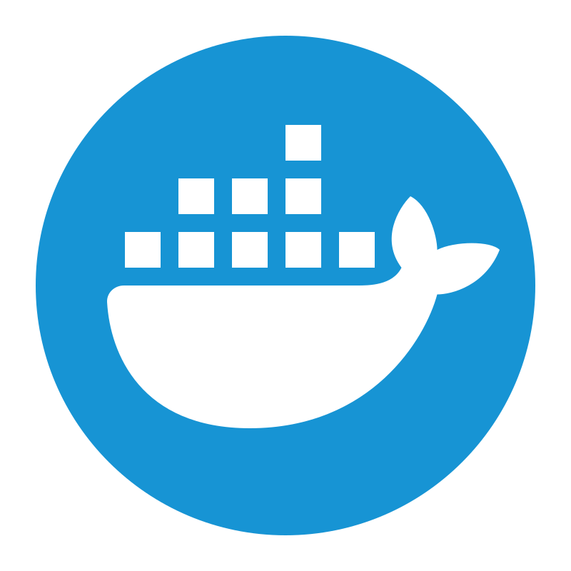

1
Start creating pipeline
- Click on the Create new pipeline button.
- You will be redirected to a page where you enter basic required information.
Explore step-by-step instructions to build your custom pipeline efficiently.
Explore step-by-step instructions to run your custom pipeline efficiently.
Explore step-by-step instructions to run your custom pipeline efficiently.
Explore our guide to efficiently manage and navigate your dashboard.
Key
It indicates that the pipeline file creation has been initiated but has not yet started executing.
It indicates that the pipeline file creation has started and is currently running
It indicates that the pipeline file creation has completed successfully and file is ready for download.
It indicates incomplete pipeline creation due to various reasons; download the log for details.
The View schema option allows users to visualize the structure and organization of the pipeline's components.
The Download image button in the view schema page enables users to save a visual representation of the pipeline's structure to their local device
This feature allows users to download the complete pipeline file to their local device.
A prompt appears when a user initiates a download, asking for confirmation to proceed or the option to cancel the action.
The version dropdown allows users to access and manage different saved versions of the pipeline. Each time a pipeline is edited and saved, a new version is automatically created and added to the dropdown while preserving all previous versions.
Explore our guide to understand the system requirements.
 Linux
LinuxGNU Make is a tool that controls the generation of executables and other non-source files of a program from the program's source file.

Docker is a platform that allows developers to package applications into lightweight containers, ensuring consistent deployment across environments.
Learn MCP capabilities for AI-assisted pipeline design, validation, orchestration, and artifact retrieval.
GenXflo MCP (Model Context Protocol) turns the platform into an AI-friendly pipeline control surface. It lets clients like VS Code and Cursor discover capabilities, validate workflows, and create pipelines in a structured way.
This page follows the MCP capability guide and presents the lifecycle, setup, and example prompts in a clean documentation layout that matches the rest of the UI.
Configure your preferred AI client with the GenXflo MCP server endpoint. Use the examples below and follow the same setup sequence: add server config, save, restart client, and verify connection.
https://mcp.genxflo.com/mcp.Info
When creating workflows through the examples in this documentation, you may either provide sample details directly in the prompt or attach a CSV sample sheet containing representative data.
Both methods are supported and help improve workflow generation accuracy.
listPipeline retrieves saved pipelines from the GenxFlo backend, including pipeline names, UIDs, and descriptions.
generatePipeline builds a complete GenxFlo pipeline payload and provides an initial local validation report.
validatePipeline checks node, edge, and argument consistency against active constraints.
savePipeline stores the validated workflow to the user dashboard.
I'll create a GenXflo de novo assembly pipeline with fastp and fastqc. Let me generate the pipeline using the GenXflo pipeline management system.
Ran generatePipeline - genxflo-mcp (MCP Server)
Reviewed content.json lines 1 to 100 >
Now let me validate this pipeline:
Ran validatePipeline - genxflo-mcp (MCP Server)
Saved the pipeline after successful validation
Perfect! The pipeline validated successfully. Now let me save and dispatch it for execution:
Ran savePipeline - genxflo-mcp (MCP Server)
File Location: denovo_assembly_pipeline.json
Pipeline Components:
/home/user/assembly_output/fastp_277070//home/user/assembly_output/fastqc_597485/Configuration Details:
/data/SRR13970440_R1.fastq.gz, /data/SRR13970440_R2.fastq.gz/home/user/assembly_output/The pipeline is ready to submit to your GenXflo system.
The MCP response summarizes the created workflow so users can confirm file locations, components, configuration details, and tool order before execution.
downloadPipeline retrieves final output ZIP artifacts for local analysis after the pipeline is ready.
Fetch pipeline context and build a de novo assembly pipeline with fastp, fastqc, and spades for SRR13970440 paired-end reads.
Fetch the GenxFlo pipeline context and build a de novo assembly pipeline with fastp, fastqc, and spades. Set the output directory to /home/user/assembly_output/. The sample details are: SRR13970440 (paired-end), with reads located at /data/SRR13970440_R1.fastq.gz and /data/SRR13970440_R2.fastq.gz. Please validate and save the pipeline.Build an RNA-seq pipeline with fastp, fastqc, star genomeGenerate, star, samtools sort/index, featurecounts, and multiqc using reference FASTA and GTF files.
Use GenxFlo MCP tools to build a workflow RNA-seq differential expression pipeline with fastp, fastqc, star genomeGenerate, star, samtools sort, samtools index, featurecounts, and multiqc. Set the output directory to /home/user/deseq_output/. The sample details are: SRR13970440 (paired-end) with reads at /data/SRR13970440_R1.fastq.gz and /data/SRR13970440_R2.fastq.gz. The reference genome files are: Reference FASTA /data/reference/genome.fa and Reference GTF /data/reference/genome.gtf. Validate and save the resulting workflow.Familiarize yourself with the key terminologies used in our system.
Find answers to common questions about our services and features.
We currently support the following bioinformatics tools: BWA, Cutadapt, Fastp, FastQC, BBduk, Hisat2, Salmon, Star, Samtools, MultiQC, Dedupe, Freebayes, featureCounts, StringTie, Bowtie2, SPAdes, Prokka, and PyDESeq2.
Yes, a zipped pipeline can be downloaded containing all the build resource files and the pipeline scripts to build and execute the pipeline.
A component card can be deleted by clicking the close button on the card or selecting the card and pressing the delete key.
To remove flowlines/connections in the canvas, select the connection and press the delete key once it turns light grey.
Enter your sample details manually by providing the Sample ID and Input Paths in the respective fields. Use the complete absolute paths to your paired-end FASTQ files, separating the R1 and R2 paths with a semicolon (;).
For example:
/home/user/project_name/input_samples/SampleID_R1.fastq.gz;/home/user/project_name/input_samples/SampleID_R2.fastq.gz
Ensure that the file names correspond to the Sample ID provided. If the sample name does not match the Sample ID, an error message appears and you will not be able to proceed. The file pattern will be automatically generated based on the input paths provided.